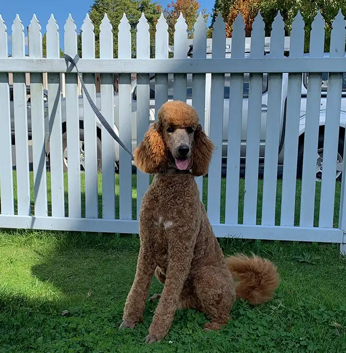
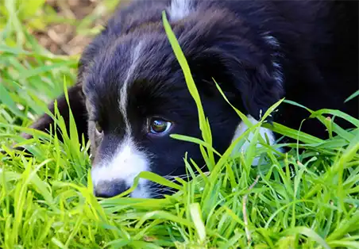

The well groomed dog

Why grooming?
It's always a pleasure to look at your dog when it's been freshly groomed. You feel like a responsible owner and people recognise this.
But that's not all! Your dog feels better, too. She's been to Shazza and feels comfortable - no tangles, clean skin, and ready for life's next big adventure.
Start with your puppy
It's never too late to start grooming a puppy. Start by brushing them gently, each night. Brush the back, tummy, legs, head and tail.
This is important for all breeds, as it helps tame your puppy and helps with bonding.

Shazza's services
Shazza's Grooming offers a wide range of services from a simple shampoo and cut to a full shampoo, cut and dry with nail trimming. Prices vary according to the size of the dog and the type and condition of it's coat. Shazza has basic prices but if, for example, de-matting or de-shedding is needed there will be an extra charge.
See the Prepare page for information on How to get your dog ready for grooming
Good preparation on your part will reduce your costs, make your dog happier and help build a stronger bond with them.
Prices
Baseline prices
Small breeds from
$80
Medium breeds from
$100
Large breeds from
$120
Guide to breed sizes
Small breeds (up to 15kg)
Chihuahuas, Pomeranians, Toy & Teacup Poodles, Pugs, Shih Tzus, and some crosses of these breeds.
Medium breeds (up to 21kg)
Miniature Schnauzers, Kelpies, Border Collies, Shelties, Whippets, Corgis, miniature sized cross breeds.
Large breeds (over 21kg)
Golden Retrievers, Labradors, Standard Poodles, Old English Sheepdogs, German Shepherds, and some crsooes of these breeds